Chapter 7 Model Selection
- Model selection (subset selection, feature seletion, variable selection) in the linear regression
\[ Y=\beta_0+\beta_1X_1 +\cdots +\beta_pX_p +\epsilon \]
refers typically to the selection of the most appropriate subset from the \(p\) explanatory variables that best predict and capture variability in \(Y\).
Despite its simplicity, the linear model has distinct advantages in terms of its interpretability and often shows good predictive performance.
Hence we discuss some ways in which the simple linear model can be improved, by replacing ordinary least squares fitting with some alternative fitting procedures.
Why consider alternatives to least squares?
- Prediction accuracy: especially when \(p>n\), to control the variance.
- Model interpretability: By removing irrelevant features - that is, by setting the corresponding coefficient estimates to zero - we can obtain a model that is more easily interpreted.
- We will present some approaches for automatically performing feature selection.
Three classes of methods
- Subset selection
- We identify a subset of the \(p\) predictors that we believe to be related to the response.
- We then fit a model using least squares on the reduced set of variables.
- Shrinkage
- We fit a model involving all \(p\) predictors, but the estimated coefficients are shrunken towards zero relative to the least squares estimates.
- This shrinkage (also known as regularization or penalization) has th effect of reducing variance and can also perform variable selection.
- Dimension reduction
- We project the \(p\) predictors into a \(M\)-dimensional subspace, where \(M<p\).
- This is achieved by computing \(M\) different linear combinations, or projections, of the variables.
- Then these \(M\) projections are used as predictors to fit a linear regression model by least squares.
7.1 Variable Selection
- Best subset and stepwise model selection procedures.
7.1.1 Best Subset Selection
- Let \(M_0\) denote the null model, which contains no predictors.
- This model simply predicts the sample mean for each observation.
- For \(k=1,2,\ldots,p\):
(a) Fit all \(\binom{p}{k}\) models that contains exactly \(k\) predictors.
(b) Pick the best among these \(\binom{p}{k}\) models, and call it \(M_k\).
- Here best is defined as having the smallest RSS, or equivalently largest \(R^2\).
- Select a single best model from among \(M_0,\ldots, M_p\) using cross-validated prediction error, \(C_p\) (AIC), BIC, or adjusted \(R^2\).
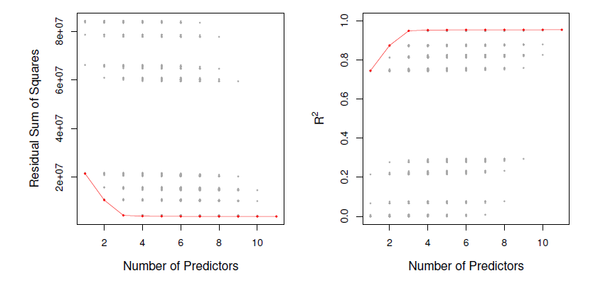
- For each possible model containing a subset of the ten predictors in the Credit data set, the RSS and \(R^2\) are displayed.
- The red frontier tracks the best model for a given number of predictors, according to RSS and \(R^2\).
- Though the data set contaings only ten predictors, the \(x\)-axis ranges from 1 to 11, since one of the variables is categorical and takes on three values, leading th the creation of two dummy variables.
- Although we have presented best subset selection here for least squares regression, the same ideas apply to other types of models, such as logistic regression.
- The deviance - negative two times the maximized log-likelihood - plays the role of RSS for a broader class of models.
Stepwise selection
For computational reasons, best subset selection cannot be applied with very large \(p\). why not?
Best subset selection may also suffer from statistical problems when \(p\) is large: larger the search space, the higher the chance of finding models that look good on the training data, even though they might not have any predictive poser on future data.
Thus an enormous search space can lead to overfitting and high variance of the coefficient estimates.
For both of these reasons, stepwise methods, which explore a far more restricted set of models, are attractive alternatives to best subset selection
7.1.2 Forward Step Wise Selection
Forward stepwise selection begins with a model containing no predictors, and then adds predictors to the model, one-at-a-time, until all of the predictors are in the model.
In particular, at each step the variable that gives the greatest additional improvement to the fit is added to the model.
- Let \(M_0\) denote the null model, which contains no predictors.
- For \(k=0,\ldots,p-1\):
(a) Consider all \(p-k\) models that augment the predictors in \(M_k\) with one additional predictor.
(b) Choose the best among these \(p-k\) models, and call it \(M_{k+1}\).
- Here best is defined as having smallest RSS or highest \(R^2\).
- Select a single best model from among \(M_0, \ldots, M_p\) using cross-validated prediction error, \(C_p\) (AIC), BIC, or adjusted \(R^2\).
Computational advantage over best subset selection is clear.
It is not guaranteed to find the best possible model out of all \(2^p\) models containing subsets of the \(p\) predictors.

- The first four selected models for best subset selection and forward stepwise selection on the Credit data set.
- The first three models are identical but the fourth models differ.
7.1.3 Backward Step Wise Selection
Like forward stepwise selection, backward stepwise selection provides an efficient alternative to best subset selection.
However, unlike forward stepwise selection, it begins with the full least squares model containing all \(p\) predictors, and then iteratively removes the least useful predictor, one-at-a-time.
- Let \(M_p\) denote the full model, which contains all \(p\) predictors.
- For \(k=p, p-1, \ldots, 1\):
(a) Consider all \(k\) models that contain all but one of the predictors in \(M_k\), for a total of \(k-1\) predictors.
(b) Choose the best among these \(k\) models, and call it \(M_k-1\).
- Here best is defined as having smallest RSS or highest \(R^2\).
- Select a single best model from among \(M_0,\ldots,M_p\) using cross-validated prediction error, \(C_p\) (AIC) , BIC, or adjusted \(R^2\).
Like forward stepwise selection, the backward selection approach searches through only \(1+p(p+1)/2\) models, and so can be applied in settings where \(p\) is too large to apply best subset selection.
Like forward stepwise selection, backward stepwise selection is not guaranteed to yield the best model containing a subset of the \(p\) predictors.
Backward selection requires that the number of samples \(n\) is larger than the number of variables \(p\) (so that the full model can be fit).
- In contrast, forward stepwise can be used even when \(n<p\), and so is the only variable subset method when \(p\) is very large.
7.1.4 Choosing the Optimal Model
The model containing all of the predictors will always havethe smallest RSS and the largest \(R^2\), since these quantities are related to the training error.
We wish to choose a model with low test error, not a model with low training error.
- Recall that training error is usually a poor estimate of test error.
Therefore, RSS and \(R^2\) are not suitable for selecting the best model among a collection of models with different numbers of predictors.
Estimating test error: two approaches
We can indirectly estimate test error by making an adjustment to the training error to account for the bias due to overfitting.
We can directly estimate the test error, using either a validation set approach or a cross-validation approach.
\(C_p\), AIC, BIC, and Adjusted \(R^2\)
These techniques adjust the training error for the model size, can be used to select among a set of models with different numbers of variables.
The next figure displays \(C_p\), BIC and adjusted \(R^2\) for the best model of each size produced by bet subset selection on the Credit data set.

- Mallow’s \(C_p\):
\[ C_p = \frac{1}{n}(RSS+2d\hat{\sigma}^2) \]
where \(d\) is the total # of parameters used and \(\hat{\sigma}^2\) is an estimate of the variance of the error \(\epsilon\) associated with each response measurement.
- The AIC criterion is defined for a large class of models fit by maximum likelihood:
\[ AIC=-2logL+2\cdot d \]
where \(L\) is the maximized value of the likelihood function for the etimated model.
In the case of the linear model with Gaussian errors, maximum likelihood and least squares are the same thing, and \(C_p\) and AIC are equivalent.
BIC:
\[ BIC=\frac{1}{n}(RSS+log(n)d\hat{\sigma}^2) \]
Like \(C_p\), the BIC will tend to take on a small value for a model with a low test error, and so generally we select the model that has the lowest BIC value.
Notice that BIC replaces the \(2d\hat{\sigma}^2\) used by \(C_p\) with a \(log(n)d\hat{\sigma}^2\) term, where \(n\) is the number of observations.
Since \(logn>2\) for any \(n>7\), the BIC statistic generally places a heavier penalty on models with many variables, and hence results in the selection of smaller models than \(C_p\).
For a least squares model with \(d\) variables, the adjusted \(R^2\) statistic is calculated as
\[ Adjusted \,\,\,R^2 =1-\frac{RSS/(n-d-1)}{TSS/(n-1)} \]
where TSS is the total sum of squares.
Unlike \(C_p\), AIC, and BIC, for which a small value indicates a model with a low test error, a large value of adjusted \(R^2\) indicates a model with a small test error.
Maximizing the adjusted \(R^2\) is equivalent to minimizing \(\frac{RSS}{n-d-1}\).
- While RSS always decreases as the number of variables in the model increases, \(\frac{RSS}{n-d-1}\) may increase or decrease, due to the presence of \(d\) in the denominator.
Unlike the \(R^2\) statistic, the adjusted \(R^2\) statistic pays a price for the inclusion of unnecessary variables in the model.
Validation and Cross-validation
Each of the procedures returns a sequence of models \(M_k\) indexed by model size \(k=0,1,2,\ldots\).
- Our job here is to select \(\hat{k}\).
- Once selected, we will return model \(M_{\hat{k}}\)
We compute the validation set error or the cross-validation error for each model \(M_k\) under consideration, and then select the \(k\) for which the resulting estimated test error is smallest.
This procedure has an advantage relative to AIC, BIC, \(C_p\), and adjusted \(R^2\), in that it provides a direct estimate of the test error, and doesn’t require an estimate of the error variance \(\sigma^2\).
It can also be used in a wider range of model selection tasks, even in caes where it is hard to pinpoint the model degrees of freedom (e.g. the number of predictors in the model) or hard to estimate the error variance \(\sigma^2\)
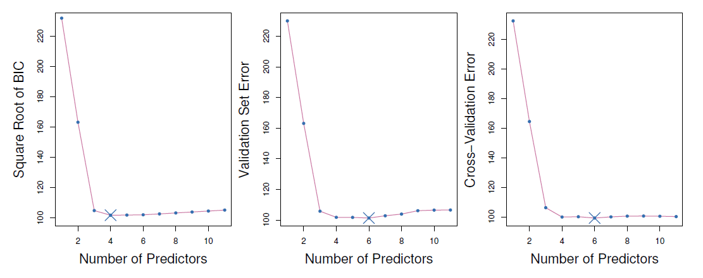
The validation errors were calculated by randomly selecting three-quarters of the observations as the training set, and the remainder as the validation set.
The cross-validation errors were computed using \(k=10\) folds.
- In this case, the validation and cross-validation methods both result in a six-variable model.
However, all three approaches suggest that the four-, five-, and six-variable models are roughly equivalent in terms of their test errors.
In this setting, we can select a model using the one-standard-error rule.
- We first calculate the standard error of the estimated test MSE for each model size, and then select the smallest model for which the estimated test error is within one standard error of the lowest point on the curve.
- What is the rationale for this?
7.1.5 Example
Consider the Hitters data set in the ISLR2 package which contains data on baseball players.
We predict a player’s Salary on the basis of available background data.
library(glmnet) # package for ridge and lasso (and elastic net, i.e., part lasso part ridge)
library(leaps)
library(ISLR2)
names(Hitters) # variables in the data set## [1] "AtBat" "Hits" "HmRun" "Runs" "RBI" "Walks"
## [7] "Years" "CAtBat" "CHits" "CHmRun" "CRuns" "CRBI"
## [13] "CWalks" "League" "Division" "PutOuts" "Assists" "Errors"
## [19] "Salary" "NewLeague"#help(Hitters) # more detailed descriotion of the data set inluding variable descriptions
head(Hitters) # Hitters data example data in the package## AtBat Hits HmRun Runs RBI Walks Years CAtBat CHits CHmRun
## -Andy Allanson 293 66 1 30 29 14 1 293 66 1
## -Alan Ashby 315 81 7 24 38 39 14 3449 835 69
## -Alvin Davis 479 130 18 66 72 76 3 1624 457 63
## -Andre Dawson 496 141 20 65 78 37 11 5628 1575 225
## -Andres Galarraga 321 87 10 39 42 30 2 396 101 12
## -Alfredo Griffin 594 169 4 74 51 35 11 4408 1133 19
## CRuns CRBI CWalks League Division PutOuts Assists Errors
## -Andy Allanson 30 29 14 A E 446 33 20
## -Alan Ashby 321 414 375 N W 632 43 10
## -Alvin Davis 224 266 263 A W 880 82 14
## -Andre Dawson 828 838 354 N E 200 11 3
## -Andres Galarraga 48 46 33 N E 805 40 4
## -Alfredo Griffin 501 336 194 A W 282 421 25
## Salary NewLeague
## -Andy Allanson NA A
## -Alan Ashby 475.0 N
## -Alvin Davis 480.0 A
## -Andre Dawson 500.0 N
## -Andres Galarraga 91.5 N
## -Alfredo Griffin 750.0 Adim(Hitters) # nobs n vars## [1] 322 20str(Hitters) # structure (shows typse of variables)## 'data.frame': 322 obs. of 20 variables:
## $ AtBat : int 293 315 479 496 321 594 185 298 323 401 ...
## $ Hits : int 66 81 130 141 87 169 37 73 81 92 ...
## $ HmRun : int 1 7 18 20 10 4 1 0 6 17 ...
## $ Runs : int 30 24 66 65 39 74 23 24 26 49 ...
## $ RBI : int 29 38 72 78 42 51 8 24 32 66 ...
## $ Walks : int 14 39 76 37 30 35 21 7 8 65 ...
## $ Years : int 1 14 3 11 2 11 2 3 2 13 ...
## $ CAtBat : int 293 3449 1624 5628 396 4408 214 509 341 5206 ...
## $ CHits : int 66 835 457 1575 101 1133 42 108 86 1332 ...
## $ CHmRun : int 1 69 63 225 12 19 1 0 6 253 ...
## $ CRuns : int 30 321 224 828 48 501 30 41 32 784 ...
## $ CRBI : int 29 414 266 838 46 336 9 37 34 890 ...
## $ CWalks : int 14 375 263 354 33 194 24 12 8 866 ...
## $ League : Factor w/ 2 levels "A","N": 1 2 1 2 2 1 2 1 2 1 ...
## $ Division : Factor w/ 2 levels "E","W": 1 2 2 1 1 2 1 2 2 1 ...
## $ PutOuts : int 446 632 880 200 805 282 76 121 143 0 ...
## $ Assists : int 33 43 82 11 40 421 127 283 290 0 ...
## $ Errors : int 20 10 14 3 4 25 7 9 19 0 ...
## $ Salary : num NA 475 480 500 91.5 750 70 100 75 1100 ...
## $ NewLeague: Factor w/ 2 levels "A","N": 1 2 1 2 2 1 1 1 2 1 ...Consider first selecting the best subset with respect to a given criterion.
Earlier we utilized the car package. Here we utilize leaps package.
Function regsubsets(), which is part of the package, can be used to identify the best subset in terms of the residual sum of squares, RSS.
summary(Hitters) # basic summary statistics## AtBat Hits HmRun Runs
## Min. : 16.0 Min. : 1 Min. : 0.00 Min. : 0.00
## 1st Qu.:255.2 1st Qu.: 64 1st Qu.: 4.00 1st Qu.: 30.25
## Median :379.5 Median : 96 Median : 8.00 Median : 48.00
## Mean :380.9 Mean :101 Mean :10.77 Mean : 50.91
## 3rd Qu.:512.0 3rd Qu.:137 3rd Qu.:16.00 3rd Qu.: 69.00
## Max. :687.0 Max. :238 Max. :40.00 Max. :130.00
##
## RBI Walks Years CAtBat
## Min. : 0.00 Min. : 0.00 Min. : 1.000 Min. : 19.0
## 1st Qu.: 28.00 1st Qu.: 22.00 1st Qu.: 4.000 1st Qu.: 816.8
## Median : 44.00 Median : 35.00 Median : 6.000 Median : 1928.0
## Mean : 48.03 Mean : 38.74 Mean : 7.444 Mean : 2648.7
## 3rd Qu.: 64.75 3rd Qu.: 53.00 3rd Qu.:11.000 3rd Qu.: 3924.2
## Max. :121.00 Max. :105.00 Max. :24.000 Max. :14053.0
##
## CHits CHmRun CRuns CRBI
## Min. : 4.0 Min. : 0.00 Min. : 1.0 Min. : 0.00
## 1st Qu.: 209.0 1st Qu.: 14.00 1st Qu.: 100.2 1st Qu.: 88.75
## Median : 508.0 Median : 37.50 Median : 247.0 Median : 220.50
## Mean : 717.6 Mean : 69.49 Mean : 358.8 Mean : 330.12
## 3rd Qu.:1059.2 3rd Qu.: 90.00 3rd Qu.: 526.2 3rd Qu.: 426.25
## Max. :4256.0 Max. :548.00 Max. :2165.0 Max. :1659.00
##
## CWalks League Division PutOuts Assists
## Min. : 0.00 A:175 E:157 Min. : 0.0 Min. : 0.0
## 1st Qu.: 67.25 N:147 W:165 1st Qu.: 109.2 1st Qu.: 7.0
## Median : 170.50 Median : 212.0 Median : 39.5
## Mean : 260.24 Mean : 288.9 Mean :106.9
## 3rd Qu.: 339.25 3rd Qu.: 325.0 3rd Qu.:166.0
## Max. :1566.00 Max. :1378.0 Max. :492.0
##
## Errors Salary NewLeague
## Min. : 0.00 Min. : 67.5 A:176
## 1st Qu.: 3.00 1st Qu.: 190.0 N:146
## Median : 6.00 Median : 425.0
## Mean : 8.04 Mean : 535.9
## 3rd Qu.:11.00 3rd Qu.: 750.0
## Max. :32.00 Max. :2460.0
## NA's :59summary(lm(Salary ~ ., data = Hitters)) # full regression with all variables##
## Call:
## lm(formula = Salary ~ ., data = Hitters)
##
## Residuals:
## Min 1Q Median 3Q Max
## -907.62 -178.35 -31.11 139.09 1877.04
##
## Coefficients:
## Estimate Std. Error t value Pr(>|t|)
## (Intercept) 163.10359 90.77854 1.797 0.073622 .
## AtBat -1.97987 0.63398 -3.123 0.002008 **
## Hits 7.50077 2.37753 3.155 0.001808 **
## HmRun 4.33088 6.20145 0.698 0.485616
## Runs -2.37621 2.98076 -0.797 0.426122
## RBI -1.04496 2.60088 -0.402 0.688204
## Walks 6.23129 1.82850 3.408 0.000766 ***
## Years -3.48905 12.41219 -0.281 0.778874
## CAtBat -0.17134 0.13524 -1.267 0.206380
## CHits 0.13399 0.67455 0.199 0.842713
## CHmRun -0.17286 1.61724 -0.107 0.914967
## CRuns 1.45430 0.75046 1.938 0.053795 .
## CRBI 0.80771 0.69262 1.166 0.244691
## CWalks -0.81157 0.32808 -2.474 0.014057 *
## LeagueN 62.59942 79.26140 0.790 0.430424
## DivisionW -116.84925 40.36695 -2.895 0.004141 **
## PutOuts 0.28189 0.07744 3.640 0.000333 ***
## Assists 0.37107 0.22120 1.678 0.094723 .
## Errors -3.36076 4.39163 -0.765 0.444857
## NewLeagueN -24.76233 79.00263 -0.313 0.754218
## ---
## Signif. codes: 0 '***' 0.001 '**' 0.01 '*' 0.05 '.' 0.1 ' ' 1
##
## Residual standard error: 315.6 on 243 degrees of freedom
## (결측으로 인하여 59개의 관측치가 삭제되었습니다.)
## Multiple R-squared: 0.5461, Adjusted R-squared: 0.5106
## F-statistic: 15.39 on 19 and 243 DF, p-value: < 2.2e-16- Significant \(t\)-alues suggest that only AtBat, Hits, Walks, CWalks, Division, and PutOuts (and possibly CRuns and Assists that are 10% significant) have explanatory power.
fit.full <- regsubsets(Salary ~ ., data = Hitters, nvmax = 19) # all subsets
(sm.full <- summary(fit.full)) # with smallest RSS(k), k = 1, ..., p, indicate variables included## Subset selection object
## Call: regsubsets.formula(Salary ~ ., data = Hitters, nvmax = 19)
## 19 Variables (and intercept)
## Forced in Forced out
## AtBat FALSE FALSE
## Hits FALSE FALSE
## HmRun FALSE FALSE
## Runs FALSE FALSE
## RBI FALSE FALSE
## Walks FALSE FALSE
## Years FALSE FALSE
## CAtBat FALSE FALSE
## CHits FALSE FALSE
## CHmRun FALSE FALSE
## CRuns FALSE FALSE
## CRBI FALSE FALSE
## CWalks FALSE FALSE
## LeagueN FALSE FALSE
## DivisionW FALSE FALSE
## PutOuts FALSE FALSE
## Assists FALSE FALSE
## Errors FALSE FALSE
## NewLeagueN FALSE FALSE
## 1 subsets of each size up to 19
## Selection Algorithm: exhaustive
## AtBat Hits HmRun Runs RBI Walks Years CAtBat CHits CHmRun CRuns CRBI
## 1 ( 1 ) " " " " " " " " " " " " " " " " " " " " " " "*"
## 2 ( 1 ) " " "*" " " " " " " " " " " " " " " " " " " "*"
## 3 ( 1 ) " " "*" " " " " " " " " " " " " " " " " " " "*"
## 4 ( 1 ) " " "*" " " " " " " " " " " " " " " " " " " "*"
## 5 ( 1 ) "*" "*" " " " " " " " " " " " " " " " " " " "*"
## 6 ( 1 ) "*" "*" " " " " " " "*" " " " " " " " " " " "*"
## 7 ( 1 ) " " "*" " " " " " " "*" " " "*" "*" "*" " " " "
## 8 ( 1 ) "*" "*" " " " " " " "*" " " " " " " "*" "*" " "
## 9 ( 1 ) "*" "*" " " " " " " "*" " " "*" " " " " "*" "*"
## 10 ( 1 ) "*" "*" " " " " " " "*" " " "*" " " " " "*" "*"
## 11 ( 1 ) "*" "*" " " " " " " "*" " " "*" " " " " "*" "*"
## 12 ( 1 ) "*" "*" " " "*" " " "*" " " "*" " " " " "*" "*"
## 13 ( 1 ) "*" "*" " " "*" " " "*" " " "*" " " " " "*" "*"
## 14 ( 1 ) "*" "*" "*" "*" " " "*" " " "*" " " " " "*" "*"
## 15 ( 1 ) "*" "*" "*" "*" " " "*" " " "*" "*" " " "*" "*"
## 16 ( 1 ) "*" "*" "*" "*" "*" "*" " " "*" "*" " " "*" "*"
## 17 ( 1 ) "*" "*" "*" "*" "*" "*" " " "*" "*" " " "*" "*"
## 18 ( 1 ) "*" "*" "*" "*" "*" "*" "*" "*" "*" " " "*" "*"
## 19 ( 1 ) "*" "*" "*" "*" "*" "*" "*" "*" "*" "*" "*" "*"
## CWalks LeagueN DivisionW PutOuts Assists Errors NewLeagueN
## 1 ( 1 ) " " " " " " " " " " " " " "
## 2 ( 1 ) " " " " " " " " " " " " " "
## 3 ( 1 ) " " " " " " "*" " " " " " "
## 4 ( 1 ) " " " " "*" "*" " " " " " "
## 5 ( 1 ) " " " " "*" "*" " " " " " "
## 6 ( 1 ) " " " " "*" "*" " " " " " "
## 7 ( 1 ) " " " " "*" "*" " " " " " "
## 8 ( 1 ) "*" " " "*" "*" " " " " " "
## 9 ( 1 ) "*" " " "*" "*" " " " " " "
## 10 ( 1 ) "*" " " "*" "*" "*" " " " "
## 11 ( 1 ) "*" "*" "*" "*" "*" " " " "
## 12 ( 1 ) "*" "*" "*" "*" "*" " " " "
## 13 ( 1 ) "*" "*" "*" "*" "*" "*" " "
## 14 ( 1 ) "*" "*" "*" "*" "*" "*" " "
## 15 ( 1 ) "*" "*" "*" "*" "*" "*" " "
## 16 ( 1 ) "*" "*" "*" "*" "*" "*" " "
## 17 ( 1 ) "*" "*" "*" "*" "*" "*" "*"
## 18 ( 1 ) "*" "*" "*" "*" "*" "*" "*"
## 19 ( 1 ) "*" "*" "*" "*" "*" "*" "*"- Asterisk indicates inclusion of a variable in a model.
names(sm.full)## [1] "which" "rsq" "rss" "adjr2" "cp" "bic" "outmat" "obj"- Printing for example \(R\)-squares shows the highest values for the best combinations of \(k\) explanatory variables, \(k=1,\ldots,p\) (\(p=19\)).
round(sm.full$rsq, digits = 3) # show R-squares (in 3 decimals)## [1] 0.321 0.425 0.451 0.475 0.491 0.509 0.514 0.529 0.535 0.540 0.543 0.544
## [13] 0.544 0.545 0.545 0.546 0.546 0.546 0.546Thus, for example the highest \(R^2\) with one explanatory variable is \(32.1\%\) when CRBI is in the regression.
Plotting \(R^2\), adjusted \(R^2\), \(C_p\) (here equivalent to AIC), and BIC for all subset sizes can be used to decide the final model.
par(mfrow = c(2, 2))
plot(x = 1:19, y = sm.full$rsq, type = "l", col = "steel blue", main = "R-squares",
xlab = "N of Variables", ylab = "R-squared")
plot(x = 1:19, y = sm.full$adjr2, type = "l", col = "steel blue", main = "Adjusted R-squares",
xlab = "N of Variables", ylab = "Adjusted R-squared")
(k.best <- which.max(sm.full$adjr2)) # model with best adj R-square## [1] 11points(k.best, sm.full$adjr2[k.best], col = "red", cex = 2, pch = 20) # show the maximum
plot(x = 1:19, y = sm.full$cp, type = "l", col = "steel blue", main = "Cp",
xlab = "N of Variables", ylab = "Cp")
(k.best <- which.min(sm.full$cp)) # model with the smallest Cp## [1] 10points(k.best, sm.full$cp[k.best], col = "red", cex = 2, pch = 20) # show the minimum
plot(x = 1:19, y = sm.full$bic, type = "l", col = "steel blue", main = "BIC",
xlab = "N of Variables", ylab = "BIC")
(k.best <- which.min(sm.full$bic)) # model with the smallest BIC## [1] 6points(k.best, sm.full$bic[k.best], col = "red", cex = 2, pch = 20)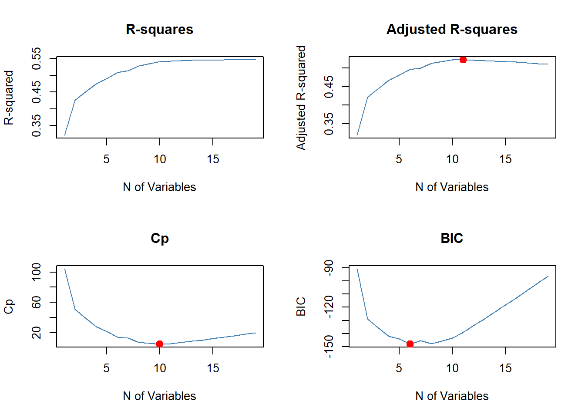
- For example the six variables selected by BIC and the corresponding fitted model are:
names(coef(fit.full, id = 6, vcov = TRUE))## [1] "(Intercept)" "AtBat" "Hits" "Walks" "CRBI"
## [6] "DivisionW" "PutOuts"summary(fit6 <- lm(Salary ~ AtBat + Hits + Walks + CRBI + Division + PutOuts, data = Hitters))##
## Call:
## lm(formula = Salary ~ AtBat + Hits + Walks + CRBI + Division +
## PutOuts, data = Hitters)
##
## Residuals:
## Min 1Q Median 3Q Max
## -873.11 -181.72 -25.91 141.77 2040.47
##
## Coefficients:
## Estimate Std. Error t value Pr(>|t|)
## (Intercept) 91.51180 65.00006 1.408 0.160382
## AtBat -1.86859 0.52742 -3.543 0.000470 ***
## Hits 7.60440 1.66254 4.574 7.46e-06 ***
## Walks 3.69765 1.21036 3.055 0.002488 **
## CRBI 0.64302 0.06443 9.979 < 2e-16 ***
## DivisionW -122.95153 39.82029 -3.088 0.002239 **
## PutOuts 0.26431 0.07477 3.535 0.000484 ***
## ---
## Signif. codes: 0 '***' 0.001 '**' 0.01 '*' 0.05 '.' 0.1 ' ' 1
##
## Residual standard error: 319.9 on 256 degrees of freedom
## (결측으로 인하여 59개의 관측치가 삭제되었습니다.)
## Multiple R-squared: 0.5087, Adjusted R-squared: 0.4972
## F-statistic: 44.18 on 6 and 256 DF, p-value: < 2.2e-16The are differences with those significant in the full model (e.g. initially non-significant CRBI is included while initially significant CWalks is not).
In particular if our objective is to use the model for prediction, we can use a validation set to identify the best predictors.
First split the sample to a test set and a validation set, estimate the best explanatory variable subsets of sizes \(1,2,\ldots,p\) using the estimation data set and find the minimum test set MSE.
sum(is.na(Hitters$Salary)) # number of missing## [1] 59Hitters <- na.omit(Hitters) # drop all rows with missing values
sum(is.na(Hitters))## [1] 0set.seed(1) # initialize random seed for exact replication
## a random vector of TRUEs and FALSEs with length equaling the rows in Hitters
## and about one half of the values are TRUE
train <- sample(x = c(TRUE, FALSE), size = nrow(Hitters), replace = TRUE) #
## in train about one half are TRUE values and one half FALSE values
mean(train) # proportion of TRUEs## [1] 0.5095057## Hitter[train, ] pick lines with train equaling TRUE, which we used for estimation
test <- !train # complement set to identify the test set
mean(test) # fraction of observations in the test set## [1] 0.4904943fit.best <- regsubsets(Salary ~ ., Hitters[train, ], nvmax = 19) # best fitting models
## next compute test set MSE for each best fitting explanatory variable subset
## for the purpose we first generate the test set into an appropriate format
## with model.matrix() function (see help(model.matrix))
test.mat <- model.matrix(Salary ~ ., data = Hitters[test, ]) # generate model matrix
head(test.mat) # a few first lines## (Intercept) AtBat Hits HmRun Runs RBI Walks Years CAtBat
## -Alvin Davis 1 479 130 18 66 72 76 3 1624
## -Alfredo Griffin 1 594 169 4 74 51 35 11 4408
## -Andre Thornton 1 401 92 17 49 66 65 13 5206
## -Alan Trammell 1 574 159 21 107 75 59 10 4631
## -Buddy Biancalana 1 190 46 2 24 8 15 5 479
## -Bruce Bochy 1 127 32 8 16 22 14 8 727
## CHits CHmRun CRuns CRBI CWalks LeagueN DivisionW PutOuts
## -Alvin Davis 457 63 224 266 263 0 1 880
## -Alfredo Griffin 1133 19 501 336 194 0 1 282
## -Andre Thornton 1332 253 784 890 866 0 0 0
## -Alan Trammell 1300 90 702 504 488 0 0 238
## -Buddy Biancalana 102 5 65 23 39 0 1 102
## -Bruce Bochy 180 24 67 82 56 1 1 202
## Assists Errors NewLeagueN
## -Alvin Davis 82 14 0
## -Alfredo Griffin 421 25 0
## -Andre Thornton 0 0 0
## -Alan Trammell 445 22 0
## -Buddy Biancalana 177 16 0
## -Bruce Bochy 22 2 1- The model.matrix() function generates constant vector for the intercept and transforms factor variables to 0/1 dummy vectors by indicating also which class is labeled by 1.
test.mse <- double(19) # vector of length 19 for validation set MSEs
for (i in 1:length(test.mse)) {
betai <- coef(object = fit.best, id = i) # extract coefficients of the model with k x-vars
pred.salary <- test.mat[, names(betai)] %*% betai # pred y = X beta
test.mse[i] <- mean((Hitters$Salary[test] - pred.salary)^2)
} # end for
test.mse # print results## [1] 164377.3 144405.5 152175.7 145198.4 137902.1 139175.7 126849.0 136191.4
## [9] 132889.6 135434.9 136963.3 140694.9 140690.9 141951.2 141508.2 142164.4
## [17] 141767.4 142339.6 142238.2which.min(test.mse) # find the minimum## [1] 7coef(fit.best, id = 7) # slope coefficients of the best fitting model## (Intercept) AtBat Hits Walks CRuns CWalks
## 67.1085369 -2.1462987 7.0149547 8.0716640 1.2425113 -0.8337844
## DivisionW PutOuts
## -118.4364998 0.2526925coef(fit.full, id = 7) # slope coefficients of the best set of 10 variables from the full data set## (Intercept) Hits Walks CAtBat CHits CHmRun
## 79.4509472 1.2833513 3.2274264 -0.3752350 1.4957073 1.4420538
## DivisionW PutOuts
## -129.9866432 0.2366813Thus, the best model is the one with 10 predictors.
This set of predictors is also the best model with 10 perdictors from the full data, and would be the results selected by the \(C_p\) criterion.
The results, however, can different for a different training and test sets (actually if we initialized the random generator with set.seed(1), a slightly different set of predictors would have been selected).
Remark
- The practice is that the size \(k\) of the best set of predictors (here \(k=10\)) is selected on the basis of the validation approach, while the final best \(k\) predictors are selected from the full sample and the corresponding regression is estimated (again from the full sample).
- Thus, predictors in the final model may differ from those of the validation best predictors, only the number is the same (above in both cases the sets of best predictors happened to coincide).
Cross-validation approach
In the same manner as in the validation set approach, we can identify the size the set of best predictors on the basis of cross-validation.
We demonstrate here the \(k\)-fold CV with \(k=10\) (here \(k\) refers to the number of folds, not the number of predictors).
First create a vector that indicates in which of the 10 groups each observation belong to.
##
## k-fold cross-validation approach
##
set.seed(1) # for exact replication
k <- 10 # n of folds
folds <- sample(x = 1:k, size = nrow(Hitters), replace = TRUE) # randomly formed k groups
head(folds)## [1] 9 4 7 1 2 7str(fit.best) # structure of regsubsets object## List of 28
## $ np : int 20
## $ nrbar : int 190
## $ d : num [1:20] 1.34e+02 8.80e+06 3.32e+01 8.89e+03 8.80e+02 ...
## $ rbar : num [1:190] 265.94 0.478 12.067 7.44 341.619 ...
## $ thetab : num [1:20] 567.316 0.985 33.726 6.76 5.944 ...
## $ first : int 2
## $ last : int 20
## $ vorder : int [1:20] 1 14 20 4 8 13 16 9 15 6 ...
## $ tol : num [1:20] 5.79e-09 5.71e-06 9.85e-09 1.47e-07 8.81e-08 ...
## $ rss : num [1:20] 26702538 18174675 18136864 17730750 17699645 ...
## $ bound : num [1:20] 26702538 15786734 12857104 11254676 10720451 ...
## $ nvmax : int 20
## $ ress : num [1:20, 1] 26702538 15786734 12857104 11254676 10720451 ...
## $ ir : int 20
## $ nbest : int 1
## $ lopt : int [1:210, 1] 1 1 12 1 12 3 1 7 10 9 ...
## $ il : int 210
## $ ier : int 0
## $ xnames : chr [1:20] "(Intercept)" "AtBat" "Hits" "HmRun" ...
## $ method : chr "exhaustive"
## $ force.in : Named logi [1:20] TRUE FALSE FALSE FALSE FALSE FALSE ...
## ..- attr(*, "names")= chr [1:20] "" "AtBat" "Hits" "HmRun" ...
## $ force.out: Named logi [1:20] FALSE FALSE FALSE FALSE FALSE FALSE ...
## ..- attr(*, "names")= chr [1:20] "" "AtBat" "Hits" "HmRun" ...
## $ sserr : num 8924127
## $ intercept: logi TRUE
## $ lindep : logi [1:20] FALSE FALSE FALSE FALSE FALSE FALSE ...
## $ nullrss : num 26702538
## $ nn : int 134
## $ call : language regsubsets.formula(Salary ~ ., Hitters[train, ], nvmax = 19)
## - attr(*, "class")= chr "regsubsets"- Thus, here the first observation falls into fold 9, the second into 4, etc.
- The following function produces predictions.
predict.regsubsets <- function(obj, # object produced by regsubset()
newdata, # out of sample data
id, # id of the model
... # potential additional argumets if needed
) { # Source: James et al. (2013) ISL
if (class(obj) != "regsubsets") stop("obj must be produced by regsubsets() function!")
fmla <- as.formula(obj$call[[2]]) # extract formula from the obj object
beta <- coef(object = obj, id = id) # coefficients corresponding to model id
xmat <- model.matrix(fmla, newdata) # data matrix for prediction computations
return(xmat[, names(beta)] %*% beta) # return predictions
} # pred.regsubsets- Next we loop through the \(k\) sets, and best predictions sets to compute MSEs.
cv.mse <- matrix(nrow = k, ncol = 19, dimnames = list(1:k, 1:19)) # matrix to store MSE-values
## for loops to produce MSEs
for (i in 1:k) { # over validation sets
best.fits <- regsubsets(Salary ~ ., data = Hitters[folds != i, ], nvmax = 19)
y <- Hitters$Salary[folds == i] # new y values
for (j in 1:19) { # MSEs over n of predictors
ypred <- predict.regsubsets(best.fits, newdata = Hitters[folds == i, ], id = j) # predictions
cv.mse[i, j] <- mean((y - ypred)^2) # store MSEs into cv.mse matrix
} # for j
} - MSEs for a \(j\)-predictors model, \(j=1,\ldots,19\).
(mean.cv.mse <- apply(cv.mse, 2, mean)) # mean mse values, surrounding with parentheses prints the results## 1 2 3 4 5 6 7 8
## 149821.1 130922.0 139127.0 131028.8 131050.2 119538.6 124286.1 113580.0
## 9 10 11 12 13 14 15 16
## 115556.5 112216.7 113251.2 115755.9 117820.8 119481.2 120121.6 120074.3
## 17 18 19
## 120084.8 120085.8 120403.5- Models with 8, 10 and 11 predictors are close to each other, however, the 10 predictor model is slightly better than the other two as shown also by the following figure, so a model with 10 predictors would be our choice.
par(mfrow = c(1, 1))
plot(x = 1:19, y = mean.cv.mse, type = "b", col = "red", xlab = "N of Predictors", ylab = "MSE",
main = "Best 10-fold Cross-Validation MSEs\nfor Different Number of Predictors")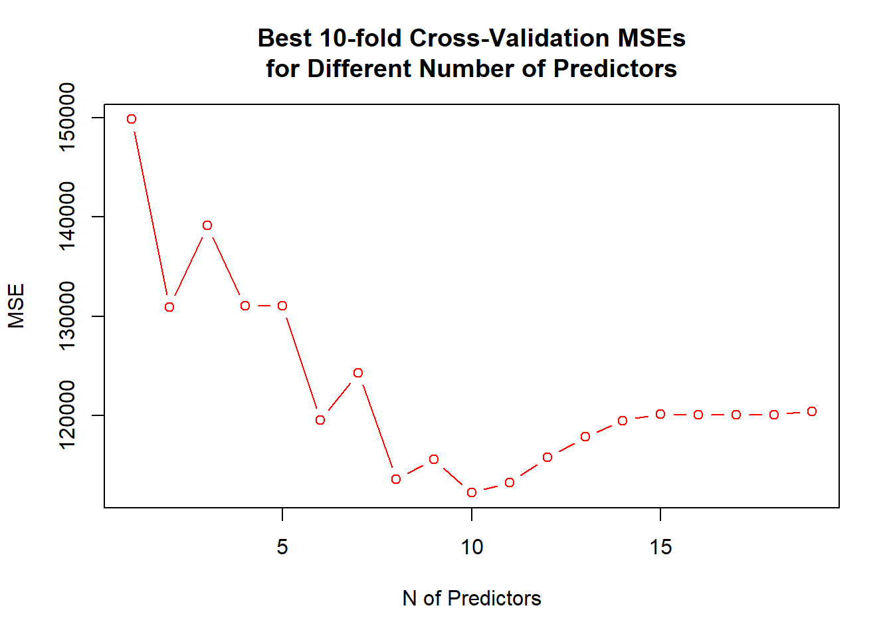
## dev.print(pdf, "../lectures/figures/ex51b.pdf")
coef(regsubsets(Salary ~ ., data = Hitters, nvmax = 19), id = 10)## (Intercept) AtBat Hits Walks CAtBat CRuns
## 162.5354420 -2.1686501 6.9180175 5.7732246 -0.1300798 1.4082490
## CRBI CWalks DivisionW PutOuts Assists
## 0.7743122 -0.8308264 -112.3800575 0.2973726 0.28316807.2 Shrinkage Methods
- Ridge regression and Lasso
- The subset selection methods use least squares to fit a linear model that contains a subset of the predictors.
- As an alternative, we can fit a model containing all \(p\) predictors using a technique that constrains or regularized the coefficient estimates, or equivalently, that shrinks the coefficient estimates towards zero.
- It may not be immediately obvious why such a constraint should improve the fit, but it turns out that shrinking the coefficient estimates can significantly reduce their variance.
7.2.1 Ridge Regression
- Recall that the least squares fitting procedure estimates \(\beta_0,\beta_1,\ldots, \beta_p\) using the values that minimize
\[ RSS=\sum_{i=1}^n (y_i -\beta_0 - \sum_{j=1}^p \beta_j x_{ij} )^2 \]
- In contrast, the ridge regression coefficient estimates \(\hat{\beta}^R\) are the values that minimize
\[ \sum_{i=1}^n (y_i -\beta_0 - \sum_{j=1}^p \beta_j x_{ij} )^2+\lambda \sum_{j=1}^p \beta_j^2 = RSS +\lambda\sum_{j=1}^p \beta_j^2 \]
where \(\lambda\ge 0\) is a tuning parameter, to be determined separately.
As with least squares, eidge regression seeks coefficient estimates that fit the data well, by making the RSS small.
However, the second term, \(\lambda \sum_j\beta_j^2\), called a shrinkage penalty, is small when \(\beta_1, \ldots, \beta_p\) are close to zero, and so it has the effect of shrinking the estimats of \(\beta_j\) towards zero.
The tuning parameter \(\lambda\) serves to control the relative impact of these two terms on the regression coefficient estimates.
Selecting a good value for \(\lambda\) is critical; cross-validation is used for this.
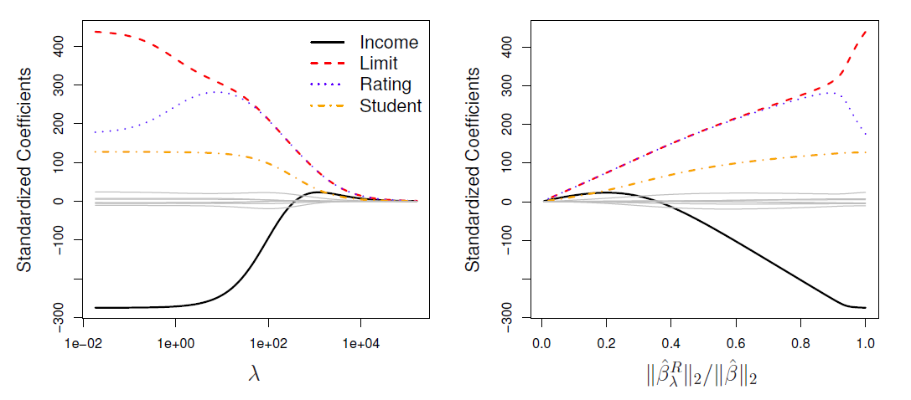
In the left-hand panel, each curve corresponds to the ridge regression coefficient estimate for one of the ten variables, plotted as a function of \(\lambda\)
The right-hand panel displays the same ridge coefficient estimates as the left-hand panel, but instead of displaying \(\lambda\) on the \(x\)-axis, we now display \(||\hat{\beta}_{\lambda}^R||_2/||\hat{\beta}||_2\), where \(\hat{\beta}\) denotes the vector of least squares coefficient estimates.
The notation \(||\beta||_2\) denotes the \(l_2\) norm (pronounced “ell 2”) of a vector, and is defined as \(||\beta||_2=\sqrt{\sum_{j=1}^p \beta_j^2}\).
Scaling of predictors
The standard least squares coefficient estimates are scale equivariant: multiplying \(X_j\) by a constant \(c\) simply leads to a scaling of the least squares coefficient estimates by a factor of \(1/c\).
- In other words, regardless of how the \(j\)th predictor is scaled, \(X_j\hat{\beta}_j\) will remain the same.
In contrast, the ridge regression coefficient estimates can change substantially when multiplying a given predictor by a constant, due to the sum of squared coefficients term in the penalty part of the ridge regression objective function.
Therefore, it is best to apply ridge regression after standardizing the predictors, using the formula
\[ \tilde{x}_{ij}=\frac{x_{ij}}{\sqrt{\frac{1}{n}\sum_{i=1}^n (x_{ij}-\bar{x}_j)^2}} \]
The Bias-variance tradeoff
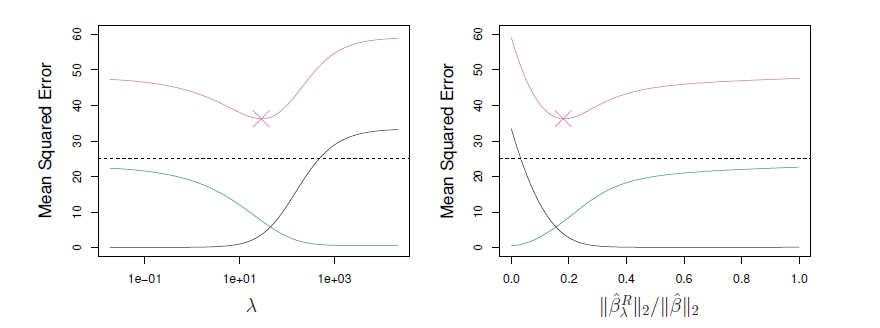
- Simulated data with \(n=50\) observations, \(p=45\) predictors, all having nonzero coefficients.
- Squared bias (black), variance (green), and test mean squared error (purple) for the ridge regression predictions on a simulated data set, as a function of \(\lambda\) and \(||\hat{\beta}_{\lambda}^R||_2/||\hat{\beta}||_2\).
- The horizontal dashed lines indicate the minimum possible MSE.
- The purple crosses indicate the ridge regression models for which the MSE is smallest.
7.2.2 RASSO Regression
- Ridge regression does have on obvious disadvantage:
- Unlike subset selection, which will generally select models that involve just a subset of the variables, ridge regression will include all \(p\) prediction in the final model
- The LASSO (least absolute shrinkage and selection operator) is a relatively recent alternative to ridge regression that overcomes this disadvantage.
- The lasso coefficients, \(\hat{\beta}_{\lambda}^L\), minimize the quantity
\[ \sum_{i=1}^n (y_i -\beta_0 - \sum_{j=1}^p \beta_j x_{ij} )^2+\lambda \sum_{j=1}^p |\beta_j| = RSS +\lambda\sum_{j=1}^p |\beta_j| \]
In statistical parlance, the lasso uses an \(l_1\) (pronounced “ell 1”) penalty instead of an \(l_2\) penalty.
- The \(l_1\) norm of a coefficient vector \(\beta\) is given by \(||\beta||_1=\sum_j|\beta_j|\)
As with ridge regression, the lasso shrinks the coefficient estimates towards zero.
However, in the case of the lasso, the \(l_1\) penalty has the effect of forcing some of the coefficient estimates to be exactly equal to zero when the tuning parameter \(\lambda\) is sufficiently large.
Hence, much like best subset selection, the lasso performs variable selection.
We say that the lasso yields sparse models - that is, models that involve only a subset of the variables.
As in ridge regression, selecting a good value of \(\lambda\) for the lasso is critical; cross-validation is again the method of choice.
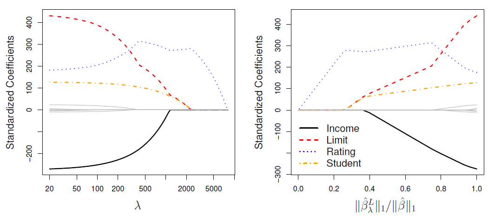
Why is it that the lasso, unlike ridge regression, results in coefficient estimates that are exactly equal to zero?
One can shwo that the lasso and ridge regression oefficient estimates solve the problems
\[ minimize_{\beta}\sum_{i=1}^n (y_i -\beta_0 - \sum_{j=1}^p \beta_j x_{ij} )^2 \,\,\, subject \,\,\, to \,\,\, \sum_{j=1}^p |\beta_j|\le s \]
and
\[ minimize_{\beta}\sum_{i=1}^n (y_i -\beta_0 - \sum_{j=1}^p \beta_j x_{ij} )^2 \,\,\, subject \,\,\, to \,\,\, \sum_{j=1}^p \beta_j^2\le s \]
respectively.
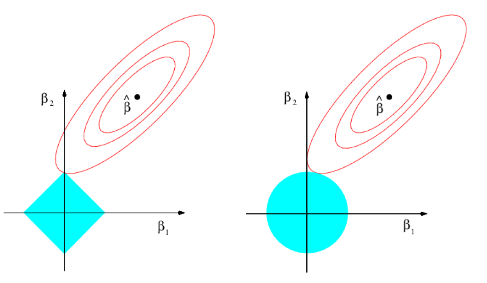
Comparing the Lasso and Ridge regression

- Left: plots of squared bias (black), variance (green), and test MSE (purple) for the lasso on simulated data set.
- Right: Comparison of squared bias, variance and test MSE between lasso (solid) and ridge (dashed).
- Both are plotted against their \(R^2\) on the training data, as a common form of indexing.
- The crosses in both plots indicate the lasso model for which the MSE is smallest.
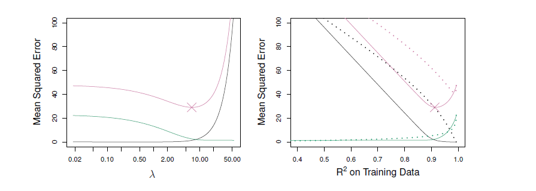
- Left: Plots of squared bias (black), variance (green), and test MSE (purple) for the lasso.
- The simulated data is similar to that prior, except that now only tow predictors are related to the response.
- Right: Comparison of squared bias, variance and test MSE between lasso (solid) and ridge (dashed).
- Both are plotted against their \(R^2\) on the training data, as a common form of indexing.
- The crosses in both plots indicate the lasso model for which the MSE is smallest
Conclusions
These two examples illustrate that neither ridge regression nor the lasso will universally dominate the other.
In general, one might expect the lasso to perform better when the response is a function of only a relatively small number of predictors.
However, the number of predictors that is related to the response is never known a priori for real data sets.
A technique such as cross-validation can be used in order to determine which approach is better on a particular data set.
Selecting the tuning parameter for ridge regression and lasso
As for subset selection, for ridge regression and lasso we require a method to determine which of the models under consideration is best.
That is, we require a method selecting a value for the tuning parameter \(\lambda\) or equivalently, the value of the constraint \(s\).
Cross-validation provides a simple way to tackle this problem.
- We choose a grid of \(\lambda\) values, and compute the cross-validation error rate for each value of \(\lambda\).
We then select the tuning parameter value for which the cross-validation error is smallest.
Finally, the model is re-fit using all of the available observations and the selected value of the tuning parameter.
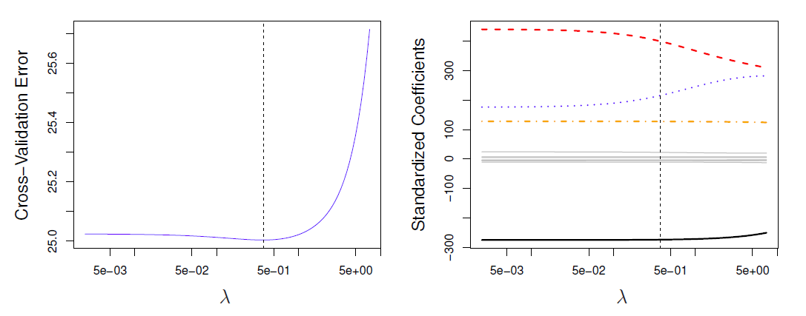
- Left: Cross-validation errors that result from applying ridge regression to the Credit data set with various values of \(\lambda\).
-Right: The coefficient estimates as a function of \(\lambda\).
- The vertical dashed lines indicates the value of \(\lambda\) selected by cross-validation.
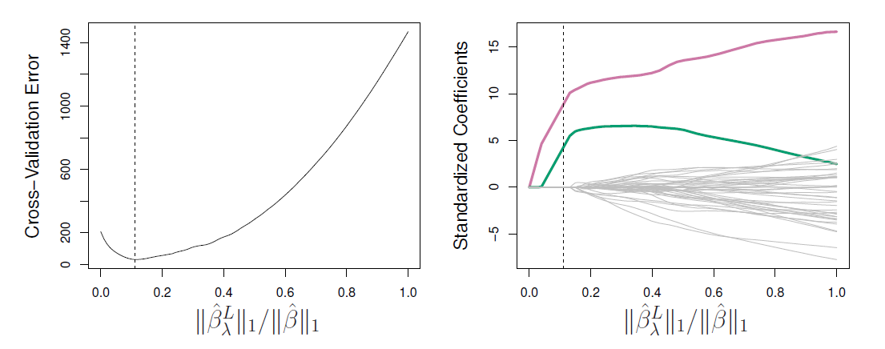
Left: Ten-fold cross-validation MSE for the lasso, applied to the sparse simulated data set from prior.
Right: The corresponding lasso coefficient estimates are displayed.
- The vertical dashed lines indicate the lasso fit for which the cross-validation error is smallest.
Remark
- A combination of the ridge regression and the lasso, called elastic-net regularization, estimates the regressions coefficients \(\beta_0, \beta_1, \beta_2, \ldots, \beta_p\) by minimizing
\[ \sum_{i=1}^n (y_i - \beta_0-x_i^T\beta)^2 + \lambda P_{\alpha}(\beta) \]
where \(x_i=(x_{i1},\ldots,x_{ip})^T\), \(\beta=(\beta_1,\ldots,\beta_p)^T\), and
\[ P_{\alpha}(\beta)=\sum_{j=1}^p (\frac{1}{2}(1-\alpha)\beta_j^2+\alpha|\beta_j|) \]
- Thus, \(\alpha=0\) implies the ridge regression and \(\alpha=1\) the lasso.
Another formulation for ridge regressio and lasso
For example the lasso restriction can be thought as a budget constraint that defines how large \(\sum_{j=1}^p |\beta_j|\) can be.
Formulating the constraints of lasso and ridge as
\[ \sum_{j=1}^p I(\beta_j \ne 0) \le s \]
where \(I(\beta_j \ne 0)\) is an indicator function equaling 1 if \(\beta_j \ne 0\) and zero otherwise, then RSS is minimized under the constraint that no more than \(s\) coefficients can be nonzero.
- Thus, the problem becomes a best subset selection problem.
7.2.3 Example
We utilize again the Hitters data set to demonstrate lasso.
R has package glmnet in which the main function to perform lasso, ridge regression, and generally elastic-net regularization estimatin is glmnet().
The glmnet() function does not allow missing values and R factor variables must be first transformed to 0/1 dummy variables.
library(ISLR2)
library(glmnet) # see library(help = glmnet)
library(help = glmnet) # basic information about the glmnet package
head(Hitters) # a few first lines## AtBat Hits HmRun Runs RBI Walks Years CAtBat CHits CHmRun
## -Alan Ashby 315 81 7 24 38 39 14 3449 835 69
## -Alvin Davis 479 130 18 66 72 76 3 1624 457 63
## -Andre Dawson 496 141 20 65 78 37 11 5628 1575 225
## -Andres Galarraga 321 87 10 39 42 30 2 396 101 12
## -Alfredo Griffin 594 169 4 74 51 35 11 4408 1133 19
## -Al Newman 185 37 1 23 8 21 2 214 42 1
## CRuns CRBI CWalks League Division PutOuts Assists Errors
## -Alan Ashby 321 414 375 N W 632 43 10
## -Alvin Davis 224 266 263 A W 880 82 14
## -Andre Dawson 828 838 354 N E 200 11 3
## -Andres Galarraga 48 46 33 N E 805 40 4
## -Alfredo Griffin 501 336 194 A W 282 421 25
## -Al Newman 30 9 24 N E 76 127 7
## Salary NewLeague
## -Alan Ashby 475.0 N
## -Alvin Davis 480.0 A
## -Andre Dawson 500.0 N
## -Andres Galarraga 91.5 N
## -Alfredo Griffin 750.0 A
## -Al Newman 70.0 AHitters <- na.omit(Hitters) # remove missing valuesThe glmnet() function requires its input in an \(X\) matrix (predictors) and a \(Y\) vector (dependent variable), and syntax \(y~x\) does not work.
The model.matrix() function generates the required \(x\)-matrix and transforms factor variables to dummy variables.
glmnet() performs lasso by selecting alpha=1 (which is also the default) and automatically selects a range for \(\lambda\).
Below we use this automatically generated grid for \(\lambda\).
## inputs matrix x and vector y for glmnet()
x <- model.matrix(Salary ~ ., Hitters)[, -1] # x-variables, drop the constant term vector
y <- Hitters$Salary
head(x)## AtBat Hits HmRun Runs RBI Walks Years CAtBat CHits CHmRun
## -Alan Ashby 315 81 7 24 38 39 14 3449 835 69
## -Alvin Davis 479 130 18 66 72 76 3 1624 457 63
## -Andre Dawson 496 141 20 65 78 37 11 5628 1575 225
## -Andres Galarraga 321 87 10 39 42 30 2 396 101 12
## -Alfredo Griffin 594 169 4 74 51 35 11 4408 1133 19
## -Al Newman 185 37 1 23 8 21 2 214 42 1
## CRuns CRBI CWalks LeagueN DivisionW PutOuts Assists Errors
## -Alan Ashby 321 414 375 1 1 632 43 10
## -Alvin Davis 224 266 263 0 1 880 82 14
## -Andre Dawson 828 838 354 1 0 200 11 3
## -Andres Galarraga 48 46 33 1 0 805 40 4
## -Alfredo Griffin 501 336 194 0 1 282 421 25
## -Al Newman 30 9 24 1 0 76 127 7
## NewLeagueN
## -Alan Ashby 1
## -Alvin Davis 0
## -Andre Dawson 1
## -Andres Galarraga 1
## -Alfredo Griffin 0
## -Al Newman 0grid.lambda <- 10^seq(10, -2, length = 100) # grid of length 100 from 10^10 down to 1/100
head(grid.lambda)## [1] 10000000000 7564633276 5722367659 4328761281 3274549163 2477076356tail(grid.lambda)## [1] 0.04037017 0.03053856 0.02310130 0.01747528 0.01321941 0.01000000lasso.mod <- glmnet(x = x, y = y, alpha = 1, lambda = grid.lambda) # alpha = 1 peforms lasso
## for a range of lambda values
str(lasso.mod) # structure of lasso.mod object produced by glmnet()## List of 12
## $ a0 : Named num [1:100] 536 536 536 536 536 ...
## ..- attr(*, "names")= chr [1:100] "s0" "s1" "s2" "s3" ...
## $ beta :Formal class 'dgCMatrix' [package "Matrix"] with 6 slots
## .. ..@ i : int [1:491] 11 1 10 11 1 5 10 11 1 5 ...
## .. ..@ p : int [1:101] 0 0 0 0 0 0 0 0 0 0 ...
## .. ..@ Dim : int [1:2] 19 100
## .. ..@ Dimnames:List of 2
## .. .. ..$ : chr [1:19] "AtBat" "Hits" "HmRun" "Runs" ...
## .. .. ..$ : chr [1:100] "s0" "s1" "s2" "s3" ...
## .. ..@ x : num [1:491] 0.0752 0.1023 0.0683 0.1802 0.7216 ...
## .. ..@ factors : list()
## $ df : int [1:100] 0 0 0 0 0 0 0 0 0 0 ...
## $ dim : int [1:2] 19 100
## $ lambda : num [1:100] 1.00e+10 7.56e+09 5.72e+09 4.33e+09 3.27e+09 ...
## $ dev.ratio: num [1:100] 0 0 0 0 0 0 0 0 0 0 ...
## $ nulldev : num 53319113
## $ npasses : int 2283
## $ jerr : int 0
## $ offset : logi FALSE
## $ call : language glmnet(x = x, y = y, alpha = 1, lambda = grid.lambda)
## $ nobs : int 263
## - attr(*, "class")= chr [1:2] "elnet" "glmnet"- Below are shown the number of values in the automatically generated \(\lambda\)-grid and some of the values.
length(lasso.mod$lambda) # number of values in the lambda range## [1] 100c(min = min(lasso.mod$lambda), max = max(lasso.mod$lambda)) # range of lambdas## min max
## 1e-02 1e+10head(lasso.mod$lambda) # a few first lamdas## [1] 10000000000 7564633276 5722367659 4328761281 3274549163 2477076356tail(lasso.mod$lambda) # a few last lambdas## [1] 0.04037017 0.03053856 0.02310130 0.01747528 0.01321941 0.01000000Thus, the regression coefficients are computed for 80 values of \(\lambda\).
These results are stored into the \(20\times 80\) beta matrix in the lasso.mod object and can be extracted directly or using coef() function.
dim(coef(lasso.mod)) # dimension of the coefficient matrix (beta)## [1] 20 100lasso.mod$lambda[70] # the 50th value of lambda## [1] 43.28761coef(lasso.mod)[, 70] # the corresponding beta estimates## (Intercept) AtBat Hits HmRun Runs RBI
## 74.7044627 0.0000000 1.6432866 0.0000000 0.0000000 0.0000000
## Walks Years CAtBat CHits CHmRun CRuns
## 1.8986354 0.0000000 0.0000000 0.0000000 0.0000000 0.1837056
## CRBI CWalks LeagueN DivisionW PutOuts Assists
## 0.3743196 0.0000000 0.0000000 -55.4369609 0.1519453 0.0000000
## Errors NewLeagueN
## 0.0000000 0.0000000sum(abs(coef(lasso.mod)[-1, 70])) # the corresponing L1-norm## [1] 59.68885- The coef() function can be used to produce lasso estimates for any values of \(\lambda\) (the same can be done by the predict() function)
#help(coef.glmnet) # help for coef and predict
drop(coef(lasso.mod, s = 1)) # lasso estimates for any value of lambda (arg s)## (Intercept) AtBat Hits HmRun Runs
## 152.68965461 -1.92453638 6.77405213 1.25572117 -0.99184280
## RBI Walks Years CAtBat CHits
## 0.00000000 5.60436806 -7.67134685 -0.06548857 0.00000000
## CHmRun CRuns CRBI CWalks LeagueN
## 0.23105395 1.12172648 0.56793753 -0.72711075 46.55909441
## DivisionW PutOuts Assists Errors NewLeagueN
## -116.69918432 0.28193985 0.28808499 -2.85400785 -10.14452831## the same and more can be done with predict()
drop(predict(lasso.mod, type = "coefficients", s = 1)) # see help(predict.glmnet)## (Intercept) AtBat Hits HmRun Runs
## 152.68965461 -1.92453638 6.77405213 1.25572117 -0.99184280
## RBI Walks Years CAtBat CHits
## 0.00000000 5.60436806 -7.67134685 -0.06548857 0.00000000
## CHmRun CRuns CRBI CWalks LeagueN
## 0.23105395 1.12172648 0.56793753 -0.72711075 46.55909441
## DivisionW PutOuts Assists Errors NewLeagueN
## -116.69918432 0.28193985 0.28808499 -2.85400785 -10.14452831## coefficient plots for different lambda values
par(mfrow = c(1, 2))
plot(lasso.mod, xvar = "lambda", xlab = expression(log(lambda)))
plot(lasso.mod, xvar = "norm", xlab = expression(log(sum(abs(beta[j])))))## Warning in regularize.values(x, y, ties, missing(ties), na.rm = na.rm): 고유한
## 'x'값들로 범위를 축소합니다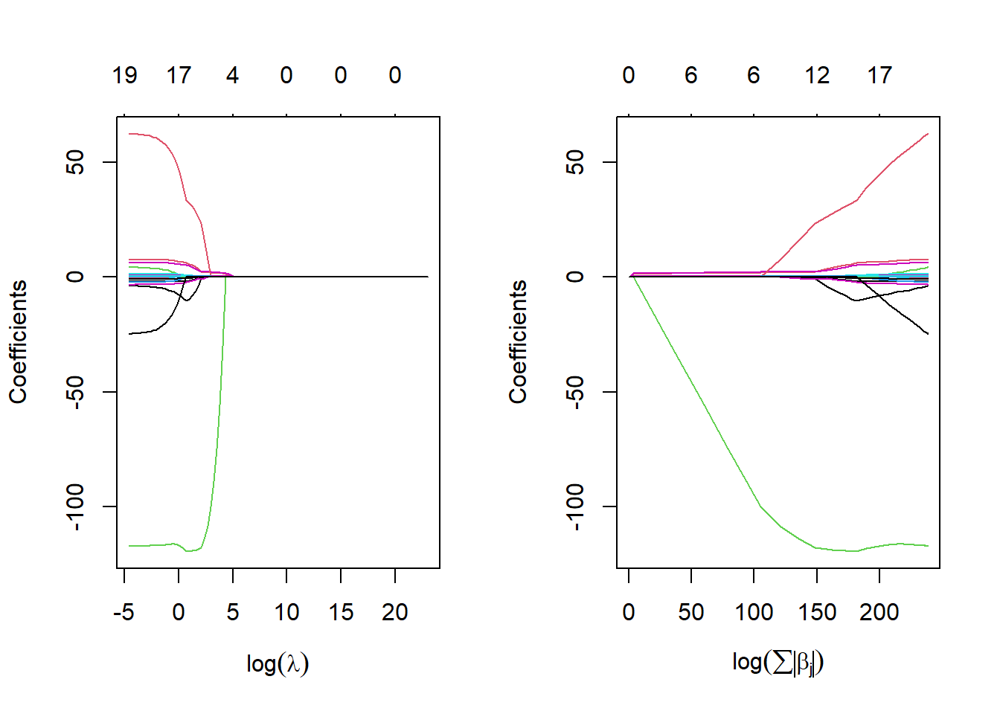
The coefficients are plotted against \(log(\lambda)\) in the left panel and logarithm of the \(l_1\)-norm of the coefficients in the right panel.
Numbers on the top of the figure indicate the number of non-zero coefficients.
The figure shows that depending of the choice of \(\lambda\), some of the coefficients will be exactly equal to zero.
Next we use cross-validation to identify the best \(\lambda\) in terms of the MSE.
The glmnet has the function cv.glmnet() for the purpose.
set.seed(1) # for replication purposes
train <- sample(1:nrow(x), nrow(x)/2) # random selectio of about half of the observations for a train set
test <- -train # test set consist observations not in the train set
y.test <- y[test] # test set y-vlues
lasso.train <- glmnet(x = x[train, ], y = y[train], alpha = 1, lambda = grid.lambda)
## similat plots as for the above tentative whole data set
par(mfrow = c(1, 2))
plot(lasso.train, xvar = "lambda", xlab = expression(log(lambda)))
plot(lasso.train, xvar = "norm", xlab = expression(log(sum(abs(beta[j])))))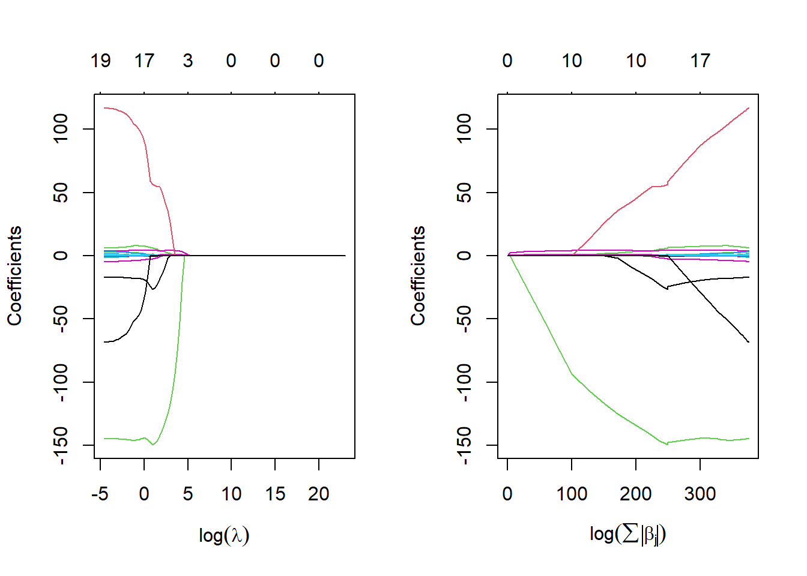
## perform cross-validation in the training set to find lambda candidates
cv.out <- cv.glmnet(x[train, ], y[train], alpha = 1, lambda = grid.lambda) # by default performs 10-fold CV
par(mfrow = c(1, 1)) # reset full plotting window
plot(cv.out) # plots MSEs against lambdas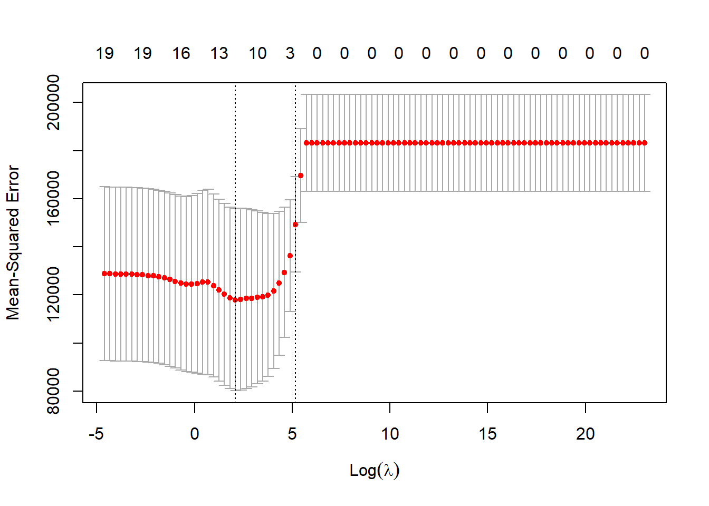
## dev.print(pdf, file = "ex52b.pdf") # pdf copy of the graph
(best.lam <- cv.out$lambda.min) # lambda for which CV MSE is at minimum## [1] 8.111308lasso.pred <- predict(lasso.train, s = best.lam, newx = x[test, ]) # predicted values with coefficients corresponding best.lam
mean((lasso.pred - y.test)^2) # test MSE## [1] 143890.9## for comparison compute test MSE for OLS estimated model from the test set
ols.train <- lm(Salary ~ ., data = Hitters, subset = train) # OLS train data estimats
ols.pred <- predict(ols.train, newdata = Hitters[test, ]) # OLS prediction
mean((ols.pred - y.test)^2) # OLS test MSE## [1] 168593.3Here lasso outperforms OLS in terms of test MSE.
Below is a scatter plot of test set realized and predicted salaries.
## scatterplots of predicted and realized salaries
par(mfrow = c(1, 1)) # full plot window
plot(x = ols.pred, y = y.test, col = "red", xlim = c(0, 2500), ylim = c(0, 2500), xlab = "Predicted", ylab = "Realized")
abline(lm(y.test ~ ols.pred), col = "red")
points(x = lasso.pred, y = y.test, col = "steel blue")
abline(lm(y.test ~ lasso.pred), col = "steel blue")
abline(a = 0, b = 1, lty = "dashed", col = "gray")
legend("topleft", legend = c("OLS", "Lasso"), col = c("Red", "Steel blue"),
pch = c(1, 1), bty = "n")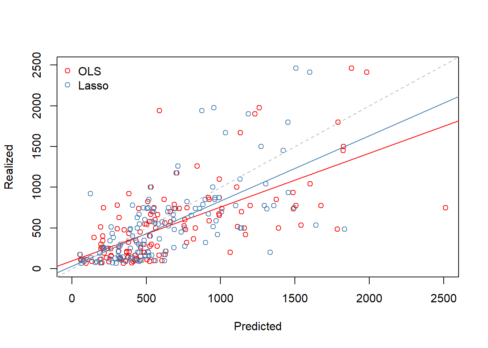
7.3 Dimension Reduction Methods
The methods that we have discussed so far in this chapter have involved fitting linear regression models, via least squares or a shrunken approach, using the original predictors, \(X_1, X_2, \ldots, X_p\).
We now explore a class of approaches that transform the predictors and then fit a least squares model using the transformed variables.
- We will refer to these techniques as dimension reduction methods.
Let \(Z_1, Z_2, \ldots, Z_M\) represent \(M<p\) linear combinations of our original \(p\) predictors.
\[ Z_m = \sum_{j=1}^p \phi_{mj}X_j \]
for some constants \(\phi_{m1},\ldots,\phi_{mp}\).
- We can then fit the linear regression model,
\[ y_i = \theta_0 + \sum_{m=1}^M \theta_m z_{im}+\epsilon_i, \,\,\, i=1,\ldots,n \]
using ordinary least squares.
- Note that in above model, the regression coefficients are given by \(\theta_0, \theta_1, \ldots, \theta_M\).
- If the constants \(\phi_{m1},\ldots, \phi_{mp}\) are chosen wisely, then such dimension reduction approaches can often outperform OLS regression.
- Notice that from definition above,
\[ \sum_{m=1}^M \theta_m z_{im} = \sum_{m=1}^M \theta_m \sum_{j=1}^p \phi_{mj}x_{ij}=\sum_{m=1}^M \sum_{j=1}^p \theta_m \phi_{mj}x_{ij}=\sum_{j=1}^p \beta_j x_{ij} \]
where
\[ \beta_j=\sum_{m=1}^M \theta_m \phi_{mj} \]
Hence model above can be thought of as a special case of the original linear regression model.
Dimension reduction serves to constrain the estimated \(\beta_j\) coefficients, since now they must take the form later.
Can win in the bias-variance trade-off.
7.3.1 Principal Components Regression
Here we apply principal components analysis (PCA) to define the linear combinations of the predictors, for use in our regression.
The first principal component is that (normalized) linear combination of the variables with the largest variance.
The second principal component has largest variance, subject to being uncorrelated with the first.
And so on.
Hence with many correlated original variables, we replace them with a small set of principal components that capture their joint variation.
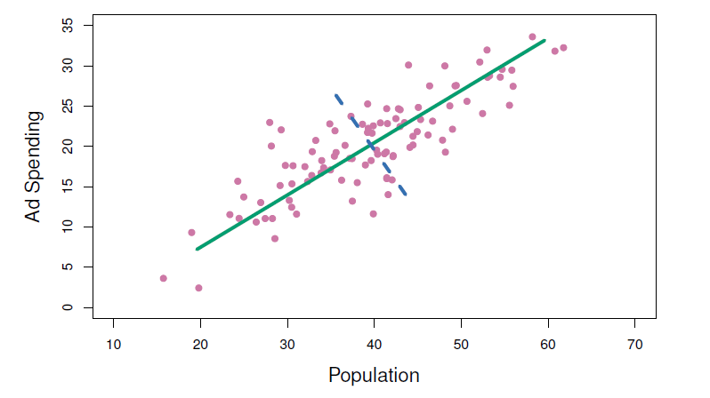
- The population size (pop) and ad spending (ad) for 100 different cities are shown as purple circles.
- The green solid line indicates the first principal component, and the blue dashed line indicates the second principal component.
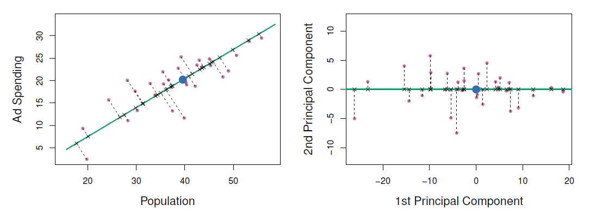
A subset of the advertising data.
Left: The first principal component, chosen to minimize the sum of the squared perpendicular distances to each point, is shown in green.
- These distances are represented using the black dashed line segments.
Right: The left-hand panel has been rotated so that the first principal component lies on the \(x\)-axis.
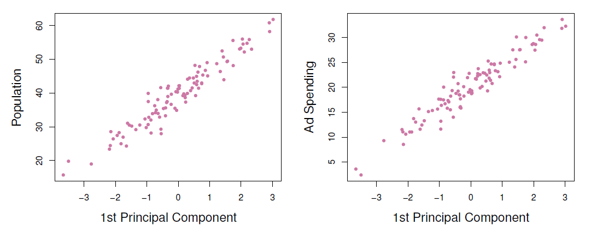
- Plots of the first principal component scores \(z_{i1}\) versus pop and ad.
- The relationships are strong.
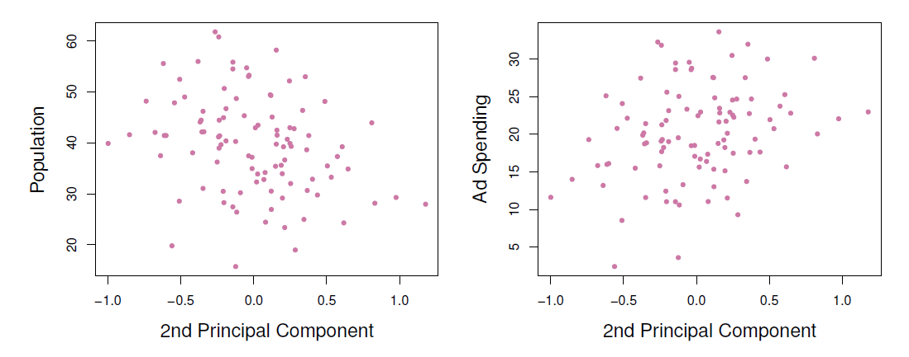
- Plots of the second principal component scores \(z_{i2}\) versus pop and ad.
- The relationships are weak.
Application to principal components regression
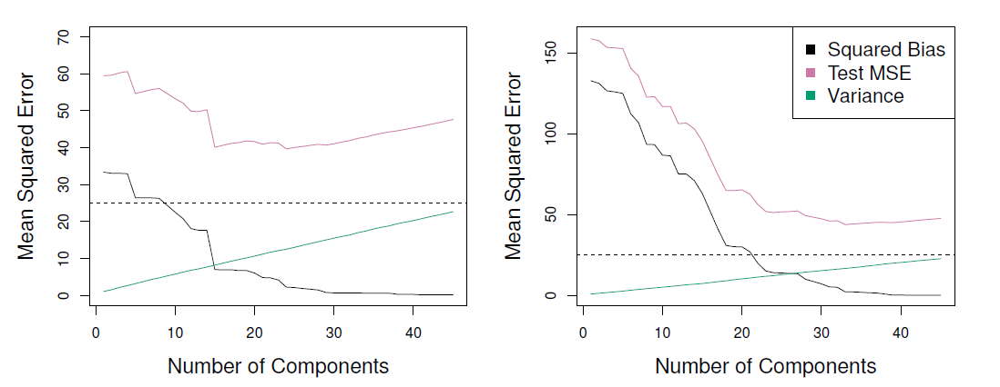
- PCR (principal components regression) was applied to two simulated data set.
- The black, green, and purple lines correspond to squared bias, variance, and test mean squared error, respectively.
- Left and right are from simulated data.
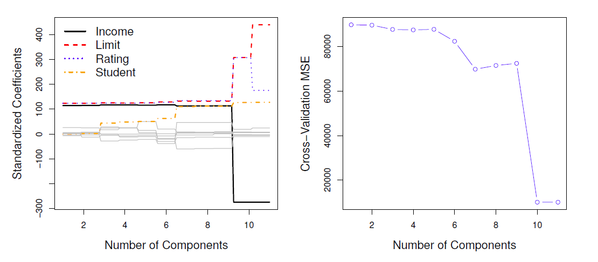
Left: PCR standardized coefficient estimates on the Credit data set for different values of M.
Right: The 10-fold cross validation MSE obtained using PCR, as a function of M.
7.3.2 Example
- Consider again the Hitters data set
library(ISLR2)
library(pls) # includes pricipal component regression and more
Hitters <- na.omit(Hitters) # remove missing values
#help(pcr)
set.seed(2) # for exact replication of the results
pcr.fit <- pcr(Salary ~ ., data = Hitters, scale = TRUE, # standardize each predictor
validation = "CV") # use CV to select M PCs default 10 fold
help(mvrCv) # info about internal CV used by pcr
summary(pcr.fit) # summary of the CV results RMSEP is the square root of CV MSE## Data: X dimension: 263 19
## Y dimension: 263 1
## Fit method: svdpc
## Number of components considered: 19
##
## VALIDATION: RMSEP
## Cross-validated using 10 random segments.
## (Intercept) 1 comps 2 comps 3 comps 4 comps 5 comps 6 comps
## CV 452 351.9 353.2 355.0 352.8 348.4 343.6
## adjCV 452 351.6 352.7 354.4 352.1 347.6 342.7
## 7 comps 8 comps 9 comps 10 comps 11 comps 12 comps 13 comps
## CV 345.5 347.7 349.6 351.4 352.1 353.5 358.2
## adjCV 344.7 346.7 348.5 350.1 350.7 352.0 356.5
## 14 comps 15 comps 16 comps 17 comps 18 comps 19 comps
## CV 349.7 349.4 339.9 341.6 339.2 339.6
## adjCV 348.0 347.7 338.2 339.7 337.2 337.6
##
## TRAINING: % variance explained
## 1 comps 2 comps 3 comps 4 comps 5 comps 6 comps 7 comps 8 comps
## X 38.31 60.16 70.84 79.03 84.29 88.63 92.26 94.96
## Salary 40.63 41.58 42.17 43.22 44.90 46.48 46.69 46.75
## 9 comps 10 comps 11 comps 12 comps 13 comps 14 comps 15 comps
## X 96.28 97.26 97.98 98.65 99.15 99.47 99.75
## Salary 46.86 47.76 47.82 47.85 48.10 50.40 50.55
## 16 comps 17 comps 18 comps 19 comps
## X 99.89 99.97 99.99 100.00
## Salary 53.01 53.85 54.61 54.61The RMSEP is square root of CV MSE, and the smallest value is reached with six PCs, which is also shown by the plot of RMSEPs.
Six components explain 88.63% of the total variation among the predictors.
validationplot(pcr.fit, val.type = "RMSEP") # Plot RMSEPs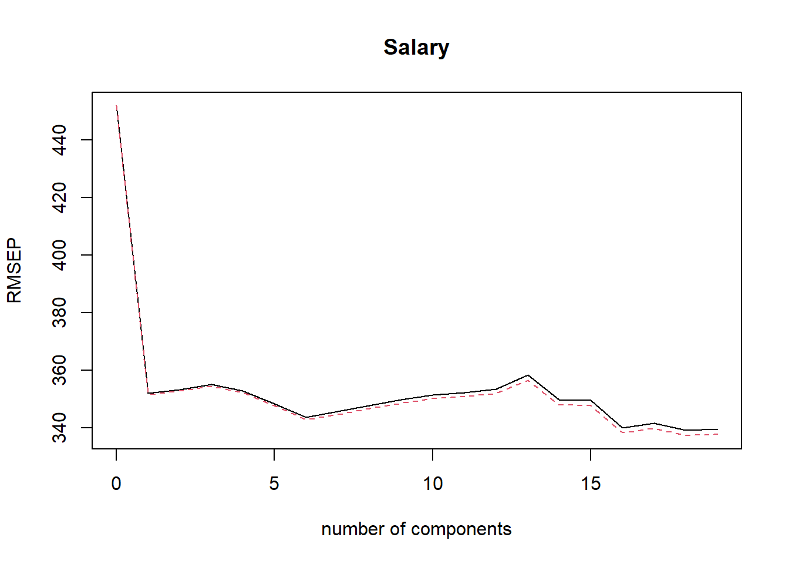
Next we will demonstrate in terms MSE how the PCR regression performs by using a test set.
First define the best number of components from the training set, estimate the corresponding regression, and compute test MSE.
set.seed(1) # for exact replication
train <- sample(nrow(Hitters), size = nrow(Hitters) / 2) # training set
test <- -train # test set resulted by not including those in the train set
head(train) # examples of observations in the training set## [1] 167 129 187 85 79 213pcr.train <- pcr(Salary ~ ., data = Hitters, subset = train, scale = TRUE,
validation = "CV") # training set
summary(pcr.train) # training results summary## Data: X dimension: 131 19
## Y dimension: 131 1
## Fit method: svdpc
## Number of components considered: 19
##
## VALIDATION: RMSEP
## Cross-validated using 10 random segments.
## (Intercept) 1 comps 2 comps 3 comps 4 comps 5 comps 6 comps
## CV 428.3 331.5 335.2 329.2 332.1 326.4 330.0
## adjCV 428.3 330.9 334.4 327.5 330.9 325.1 328.6
## 7 comps 8 comps 9 comps 10 comps 11 comps 12 comps 13 comps
## CV 334.6 335.3 335.8 337.5 337.7 342.3 340.3
## adjCV 333.0 333.4 333.3 335.0 335.2 339.6 337.6
## 14 comps 15 comps 16 comps 17 comps 18 comps 19 comps
## CV 343.2 346.5 344.2 355.3 361.2 352.5
## adjCV 340.3 343.4 340.9 351.4 356.9 348.3
##
## TRAINING: % variance explained
## 1 comps 2 comps 3 comps 4 comps 5 comps 6 comps 7 comps 8 comps
## X 39.32 61.57 71.96 80.83 85.95 89.99 93.25 95.34
## Salary 43.87 43.93 47.36 47.37 49.52 49.55 49.63 50.98
## 9 comps 10 comps 11 comps 12 comps 13 comps 14 comps 15 comps
## X 96.55 97.61 98.28 98.85 99.22 99.53 99.79
## Salary 53.00 53.00 53.02 53.05 53.80 53.85 54.03
## 16 comps 17 comps 18 comps 19 comps
## X 99.91 99.97 99.99 100.00
## Salary 55.85 55.89 56.21 58.62validationplot(pcr.train, val.type = "RMSEP")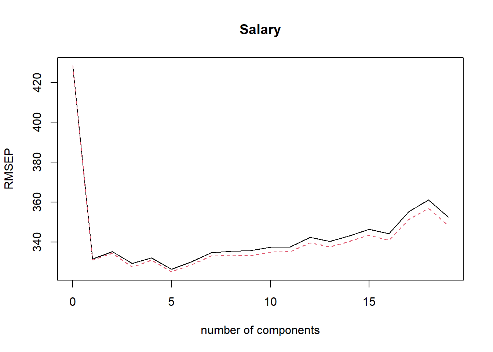
- On the basis of the training data CV RMSEP results \(M=7\) principal components yields the best results.
pcr.pred <- predict(pcr.train, Hitters[test, ], ncomp = 7)
head(pcr.pred) # a few first predictions## , , 7 comps
##
## Salary
## -Alvin Davis 595.5249
## -Andre Dawson 1104.4628
## -Andres Galarraga 454.3308
## -Alfredo Griffin 564.6986
## -Al Newman 160.0433
## -Argenis Salazar 10.8481mean((pcr.pred - Hitters$Salary[test])^2) # test MSE## [1] 140751.3This test set MSE is slightly smaller that of lasso.
PCR is useful in prediction purposes.
If interpretation of the model is needed PCR results may be difficult to interpret.
Finally, estimating the \(M=7\) components from the full data set yields the following results.
summary(pcr.fit <- pcr(Salary ~ ., data = Hitters, scale = TRUE, ncomp = 7)) # estimate and summarize## Data: X dimension: 263 19
## Y dimension: 263 1
## Fit method: svdpc
## Number of components considered: 7
## TRAINING: % variance explained
## 1 comps 2 comps 3 comps 4 comps 5 comps 6 comps 7 comps
## X 38.31 60.16 70.84 79.03 84.29 88.63 92.26
## Salary 40.63 41.58 42.17 43.22 44.90 46.48 46.697.3.3 Partial Least Squares
PCR identifies linear combinations, or directions, that best represent the predictors \(X_1, \ldots, X_p\).
These directions are identified in an unsupervised way, since the response \(Y\) is not used to help determine the principal component directions.
That is, the response does not supervised the identification of the principal components.
Consequently, PCR suffers from a potentially serious drawback.
- There is no guarantee that the directions that best explain the predictors will also be the best directions to use for predicting the response.
Like PCR, PLS is a dimension reduction method, which first identifies a new set of features \(Z_1, \ldots, Z_M\) that are linear combinations of the original features, and then fits a linear model via OLS using these M new features.
But unlike PCR, PLS identifies these new features in a supervised way - that is, it makes use of the response \(Y\) in order to identify new features that not only approximate the old features well, but also that are related to the response.
Roughly speaking, the PLS approach attempts to find directions that help explain both the response and the predictors.
After standardizing the \(p\) predictors, PLS computes the first direction \(Z_1\) by setting each \(\phi_{1j}\) equal to the coefficient from the simple linear regression of \(Y\) onto \(X_j\).
One can show that this coefficient is proportional to the correlation between \(Y\) and \(X_j\).
Hence, in computing \(Z_1=\sum_{j=1}^p \phi_{1j}X_j\), PLS places the highest weight on the variables that are most strongly related to the response.
Subsequent directions are found by taking residuals and then repeating the above prescription.
7.3.4 Example
- Continuing the previous examples, we use plsr() function of the pls package.
library(ISLR2)
library(pls) # includes pricipal component regression and more
Hitters <- na.omit(Hitters) # remove missing values
set.seed(1) # initialize again the seed
pls.train <- plsr(Salary ~ ., data = Hitters, subset = train, scale = TRUE,
validation = "CV")
summary(pls.train)## Data: X dimension: 131 19
## Y dimension: 131 1
## Fit method: kernelpls
## Number of components considered: 19
##
## VALIDATION: RMSEP
## Cross-validated using 10 random segments.
## (Intercept) 1 comps 2 comps 3 comps 4 comps 5 comps 6 comps
## CV 428.3 325.5 329.9 328.8 339.0 338.9 340.1
## adjCV 428.3 325.0 328.2 327.2 336.6 336.1 336.6
## 7 comps 8 comps 9 comps 10 comps 11 comps 12 comps 13 comps
## CV 339.0 347.1 346.4 343.4 341.5 345.4 356.4
## adjCV 336.2 343.4 342.8 340.2 338.3 341.8 351.1
## 14 comps 15 comps 16 comps 17 comps 18 comps 19 comps
## CV 348.4 349.1 350.0 344.2 344.5 345.0
## adjCV 344.2 345.0 345.9 340.4 340.6 341.1
##
## TRAINING: % variance explained
## 1 comps 2 comps 3 comps 4 comps 5 comps 6 comps 7 comps 8 comps
## X 39.13 48.80 60.09 75.07 78.58 81.12 88.21 90.71
## Salary 46.36 50.72 52.23 53.03 54.07 54.77 55.05 55.66
## 9 comps 10 comps 11 comps 12 comps 13 comps 14 comps 15 comps
## X 93.17 96.05 97.08 97.61 97.97 98.70 99.12
## Salary 55.95 56.12 56.47 56.68 57.37 57.76 58.08
## 16 comps 17 comps 18 comps 19 comps
## X 99.61 99.70 99.95 100.00
## Salary 58.17 58.49 58.56 58.62- \(M=2\) produces the smallest CV RMSEP.
validationplot(pls.train, val.type = "RMSEP") # plot of CV RMSEP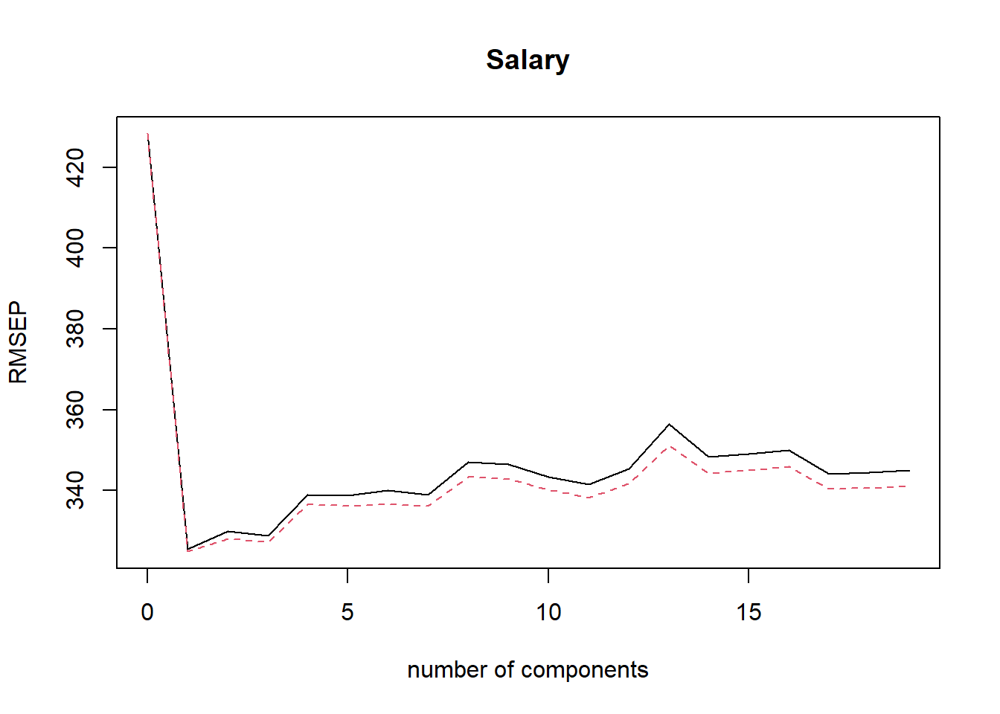
##dev.print(pdf, file = "ex54.pdf") # pdf copy
pls.pred <- predict(pls.train, newdata = Hitters[test, ], ncomp = 2)
mean((Hitters$Salary[test] - pls.pred)^2)## [1] 145367.7- MSE if comparable but slightly higher than that of PCR.